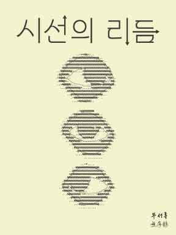

시선의 리듬 포스터
시각적 흐름과 균형을 활용한 그래픽 컨셉 디자인
기간: 2025.10
분야: 그래픽 디자인/컨셉 아트
최종 결과물
Style Guide
- 메인 컬러: #f4f3ce
- 폰트 컨셉: 모던 산세리프
🛠️ 사용 기술
Illustrator
프로젝트 설명
오프라인 행사 홍보를 위해 제작된 포스터로, 기술적인 요소가 인간적인 감성과 만나는 지점을 시각화하는 것이 목표였습니다. 눈을 아스키 아트로 표현하여 디지털 세계의 본질을 은유적으로 드러냈으며, 동시에 관람자와 컴퓨터 간의 '연결되는 시선'을 강조했습니다.